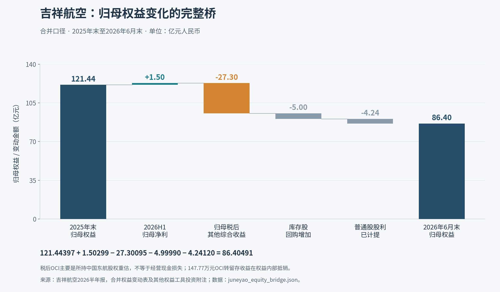
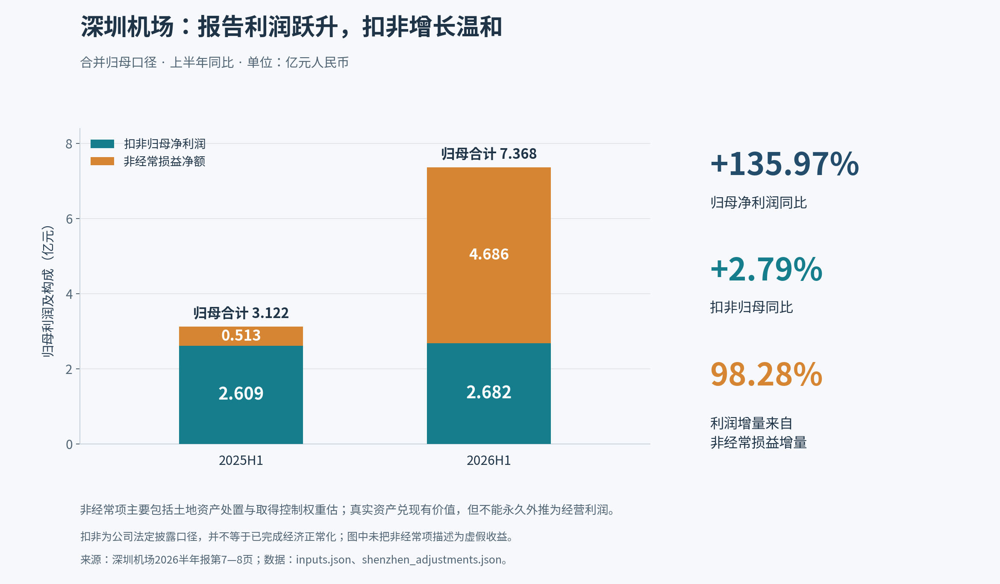

航空与机场：四家公司深度首轮研究
研究日：2026-10-18。价格基准：2026-10-16 最近交易日收盘，人民币、不复权。财务基准：已披露的 2026 年半年报，TTM 用 2025 全年 + 2026H1 − 2025H1 复算。月度经营资料更新至 2026 年 9 月。本报告不把四家公司等同为一种商业模式，不提供交易指令。
先给结论
- 吉祥航空：收益管理改善真实存在，但油价和资本结构把改善吞掉。 客运每客公里收入实际提高约 6.22%，不能把利润下降解释成简单降价换客座率；航油每吨成本约升 38.35%，才是本期主要压力。账面中国东航股权与航空主营又暴露于部分相同风险。当前价格需要利润恢复，不能靠高客座率或大额回购单独证明便宜。
- 上海机场：枢纽、货运和参股经营有价值，机场本体毛利却未同步增长。 归母利润增长 16.46%，毛利减少 0.687 亿元；投资收益、公允价值和财务费用改善共同贡献 3.169 亿元增量。新免税合同提供固定部分与销售弹性，但不能套用旧扣点率，更不能把合同总收入和合资公司利润重复资本化。
- 深圳机场：最显眼的“低市盈率”，也是本组口径误导最大的一家。 TTM 报告利润 PE 14.51 倍，按公司披露扣非利润复算约 31.97 倍。H1 归母增长中约 98.28% 来自非经常损益增量。土地补偿确实释放资产价值与现金，并非无价值；它不能按经营利润倍数永久外推。
- 白云机场：扩容后经营爬坡是可检验的投资命题，但会计解释必须纠正。 三期主要资产由集团投资、上市公司暂以短期租赁使用，H1 三期租费 4.136 亿元。合并固定资产折旧及使用权摊销均同比下降，利润下降不能笼统归因于“整座 T3 新增折旧”。9 月客流增长较强，仍须验证租费折扣、非航收益和现金结算能否让增长归于上市公司股东。
以上是证据排序，不是四只股票的买卖排名。以现有数据，最值得继续验证的分别是：吉祥的油价—票价利润差；上海的新免税单位经济与参股现金回报；深圳的剔除并表后的增长；白云的租费后增量贡献。四项均已完成原始财报和关键经营合同的首轮核验；尚未达到可给精确长期目标价的证据程度。
1. 当前价格究竟已经要求什么
| 公司 | 收盘价 | 最新已核总股数，亿股 | 市值，亿元 | TTM归母，亿元 | TTM扣非，亿元 | 报告PE | 扣非PE | PB，按6/30归母权益 |
|---|---|---|---|---|---|---|---|---|
| 上海机场 600009 | 23.43 | 24.88313040 | 583.01 | 22.8862 | 21.5000 | 25.47 | 27.12 | 1.35 |
| 吉祥航空 603885 | 9.56 | 21.69005268 | 207.36 | 6.8445 | 5.5837 | 30.30 | 37.14 | 2.40 |
| 深圳机场 000089 | 6.72 | 20.50769509 | 137.81 | 9.4975 | 4.3104 | 14.51 | 31.97 | 1.14 |
| 白云机场 600004 | 7.79 | 25.77244598 | 200.77 | 11.4485 | 8.0606 | 17.54 | 24.91 | 0.97 |
复算例：深圳 TTM 扣非 = 4.2375237862 + 2.6817810957 − 2.6089472149 = 4.3103576670 亿元。这里的扣非是公司法定披露口径，不等于我们已完成经济意义的正常化盈利。
行情已实际读取腾讯与新浪公开回执，四个收盘价一致；回执均标示 2026-10-16，腾讯时间约 16:15，新浪约 15:35。它们是两个行情分发端，不宣称数据供应链完全独立，也不是交易所逐笔成交审计。公开查询入口为腾讯行情和新浪行情；随附包保存当次原始回执，避免动态页面日后变动。公司报表来源见文末逐项索引。
PB 不是 10/16 的实时账面净值：6/30 后的分红、回购、经营利润与投资估值均会改变权益。吉祥最新回购公告确认总股本 21.6901 亿股，并披露 7 月启动的新一轮回购至 10/12 已付 6.8054 亿元；仅扣这项、其余不变的机械 PB 会升至约 2.61 倍，但这不是三季末真实 PB。吉祥10/13回购进展
价格承受的盈利要求，不伪装成目标价
假设一位投资者愿给“已能持续的归母盈利”20倍市盈率，则目前市值需要以下利润。20倍只是可修改的情景参数，并非行业公允倍数；随附计算同时提供15、20、25倍。
| 公司 | 当前市值/20所需年度持续利润，亿元 | 比当前TTM扣非高 |
|---|---|---|
| 上海机场 | 29.15 | 35.58% |
| 吉祥航空 | 10.37 | 85.68% |
| 深圳机场 | 6.89 | 59.86% |
| 白云机场 | 10.04 | 24.54% |
这个检验的意义是让“便宜”“恢复”有数量：吉祥回到2025年报告净利10.40亿元附近，大致才对应当前价格约20倍报告利润；深圳不能用当期搬迁收益把持续盈利要求直接当作已满足；白云若能恢复到扩建前盈利能力，估值解释明显改善，但租费新基准未必允许简单复原。上海需要货运、商业和参股经营共同增长，而非只靠旅客数。
两个对象化敏感度，不编情景概率
吉祥使用H1实际客运收入作为一个半年冲击区块，保持该区块RPK、其他成本和其余半年盈利不变，边际税率假定25%；把收益率变化的税后影响、公司披露油价敏感度施加在历史TTM扣非上：
| 吉祥条件 | 客运收益变化 | 油价变化 | 盈利变动，亿元 | 历史TTM加冲击，亿元 | 若该盈利可持续，20倍映射价格 |
|---|---|---|---|---|---|
| 压力 | −2% | +5% | −3.403 | 2.180 | 2.01 |
| 不变 | 0 | 0 | 0 | 5.584 | 5.15 |
| 修复 | +2% | −5% | +3.403 | 8.987 | 8.29 |
修复条件下25倍映射10.36元、15倍6.21元；现价9.56元的位置会随“恢复利润能持续多久、该给多大倍数”改变。尤其周期底部利润不能直接用固定倍数当内在价值；上述是弹性和假设依赖展示，不是1年盈利预测或目标价区间。未把东航股权额外加回，也未把激励回购全按注销处理。油价与客运收益可能同向、反向或经附加费联动，组合情景不等于独立风险相加后的最可能结果。
白云则改变“新增旅客税前边际贡献”和“租费重置”，不用航空油价模型。按H1三期短租费用×2的8.272亿元作为费用敏感度参照，每项增量使用25%边际税率：
| 白云条件 | 年新增旅客/税前贡献假设 | 三期费用相对参照变化 | 年利润增量，亿元 |
|---|---|---|---|
| 压力 | 0 | +20% | −1.241 |
| 温和增长 | 500万人×25元 | +10% | +0.317 |
| 爬坡修复 | 1,000万人×35元 | 不变 | +2.625 |
在20倍盈利估值假设下，这三项增量对每股价值的机械影响约为−0.96、+0.25、+2.04元；每股价格7.79元因此不能只由旅客增速决定。这里的“边际贡献”已经扣新增旅客直接成本、尚未扣本表单列租费重置；不存在把总营收当利润。新增客流、单位贡献、税率和租费调整都是研究情景，不是公司指引。TTM本身混合了新旧运营制度，不能把“TTM + 本表增量”直接当下一年度盈利；还须补足全年租费、开办成本退出和季节性。随附脚本仅保留该情景的增量估值，不给白云绝对目标价。
上海与深圳没有强行套这两类参数：上海采用免税合同固定基准6.08—9.12亿元加销售弹性的合同压力测试、参股收益分层；深圳先做交易与并表校正，再用持续盈利要求反推。没有项目利润分解、租赁资本开支计划，就不编一个共同DCF或“概率加权预期收益”。
2. 吉祥航空：先算收益与成本，再看股权价值和债务
2.1 客座率上涨并不等于靠降价
H1 ASK 287.8701 亿人公里，同比增长0.57%；RPK 250.4495 亿人公里，同比增长2.73%；客座率87.00%，提升1.83个百分点。总乘客人数反而下降1.46%，说明距离与航线结构也在变。国际 ASK 下降7.47%、RPK下降1.61%，国际客座率提升4.97个百分点的一部分来自供给收缩，不能全解释成国际需求旺盛。2026半年报，PDF第9—11页
公司命名的“客公里收益”定义是主营业务收入/RPK，含货运，不是纯客票收益。本研究用财报客运收入另算：
| 单位经济，元 | 2026H1 | 2025H1 | 解释 |
|---|---|---|---|
| 客运收入/RPK | 0.4580 | 0.4312 | 增长6.22%；含实际收入结构，不是同航线同舱票价指数 |
| 客运收入/ASK | 0.3985 | 0.3673 | 客座率和收益共同改善 |
| 主营收入/ASK | 0.4152 | 0.3817 | 含货运，用于与主营成本匹配 |
| 主营成本/ASK | 0.3887 | 0.3396 | 成本增长更快 |
| 扣油主营成本/ASK | 0.2328 | 0.2252 | 也有约3.36%的非油成本上升 |
原始客运收入分别114.7095、105.1216亿元；使用2025半年报收入列，未误把当期成本列当上年收入。2025半年报，PDF第143—144页；2026半年报，PDF第153—154页
航油成本44.87亿元，对比32.73亿元；耗油58.63万吨，对比59.17万吨。按披露四舍五入数复算每吨成本约7,653元/5,532元，增加38.35%，不是耗油量扩张所致。航油成本增加12.14亿元，超过全部营收增量10.14亿元，约占营业成本增量82%。同时合作航线收入由2.596亿元增至3.480亿元，航线补贴由2.870亿元降至0.878亿元；其他收益合计减少0.750亿元。财务费用减少1.373亿元（含汇兑由损失转收益），部分缓冲压力。不能把净利变化只归于一个宏观变量。2026半年报，PDF第26、155页
盈利杠杆实算：保持运量、成本与25%边际税率不变，客运收益提高1%约增加税前1.147亿元、税后0.860亿元。公司披露航油采购均价变动5%，净利敏感度约1.683亿元；大约相当于客运收益变动1.96%。浮息变动100基点对应净利约1.523亿元，人民币对美元变动1%对应约0.224亿元。后两项与油价敏感度的期间和风险假设以公司披露为准；不可直接相加为预测，也不能忽略燃油附加费、套保、需求变化和亏损税盾。
2.2 现金流高于利润，不代表43亿元可分配
H1 CFO43.287亿元，但经营性应付增加24.095亿元，上年仅3.757亿元。机械剔除该应付变动后，CFO由上年27.316亿元降至19.192亿元；这是质量检验，不是完整正常化现金流，因为应收、预售机票和季节性同样需要调整。
实际购建长期资产现金17.908亿元；融资现金流内租赁支付21.749亿元，二者从CFO扣除后剩3.631亿元（上年−6.862亿元）。这个改善有意义，尤其上年租赁现金支付更高；但它尚未扣非租赁债息、债务净偿还、分红及回购，也没有把增长性购机与维持性支出分开。回购并不应作为经营成本，可它真实减少资金缓冲。2026半年报，PDF第62、159—162页
6/30带息债务约385.74亿元（含租赁等），货币资金41.660亿元，其中受限2.407亿元，可用现金约39.254亿元；相减约346.486亿元。短债107.563亿元加一年内到期非流动负债41.011亿元，可用现金仅覆盖约26.42%。这是再融资依赖，不是断言即将违约：公司仍有营运现金流和借款滚动，短债未披露逾期；也不能将集团股东债务直接并入上市公司债务。
2.3 中国东航股权：损失性质与权益桥
以下全部为合并归母权益，亿元：
121.44397（2025末）+1.50299（归母净利）−27.30095（归母税后OCI）−4.99990（库存股回购增加）−4.24120（应付普通股股利）=86.40491（2026/6末）。

已审原图已随包提供并按原 SHA 校验；原文字替代始终保留，图片加载失败不影响全文。
原图校验
1d0d4abc754479b4cafc0741f75b674f69df56bc79fce657b748998b951c57de本期OCI均归母；少数股东期末权益约−0.12794亿元，不能混入归母分母。OCI结转留存收益147.77万元在权益内部对冲，解释了OCI余额变动与本期OCI净额差异，不影响总权益。
其他权益工具投资明细为中国东航股权：期初75.30725亿元，减投资0.06508亿元，税前公允价值损失28.54341亿元，其他变动−0.65332亿元，期末46.04543亿元。相关FVOCI税后损失27.22238亿元，所得税影响约1.32104亿元；全部OCI另含外币报表折算等。其他变动的更细拆分在所读附注未明确，不自行归因为现金亏损。母公司单体投资余额30.82082亿元小于合并46.04543亿元，估值必须用同一合并范围。2026半年报，PDF第54—59、125—126、146—153页
这是已经入账的权益重估损失，不是现金经营亏损，也不是“表外亏损”。航空景气反转时它可能回升，构成熊市观点的反证；但油价、国际需求和人民币等同时影响主营与所投航空股，不宜视为低相关安全资产。该投资6月账面价值约占当前市值22.21%，假设它再波动20%，税前相当于归母权益约10.66%。这只是6月估值敏感性，不代表10月市值。
两种估值不能混用：
- 总体盈利估值：使用合并净利/现金流，不另加投资的全部价值。
- 分部估值：航空主营正常化盈利剔除金融投资收益与相关融资成本后估值，再单独加投资可实现净值，处理债务、税和流动性。不能一边加回东航股权价值，一边把相同股息永久资本化。本期其他权益工具股利收益为空，不应虚构一条稳定股息流；也不应用6月股权值机械给10月“折价目标”。
最新资本配置进一步提高验证要求：7月新回购计划用于员工持股或股权激励，至10/12已付6.8054亿元，不是自动注销；10/16公告显示控股股东及一致行动人质押合计占其持股78.83%、占总股本36.03%。公告称当时没有平仓风险，这既不是已发生危机，也不能替代独立融资风险判断。回购公告；质押公告
2.4 三种解释怎样竞争
- 周期修复：油价冲击可能暂时，收益率与单位收入确有改善；如果油价回落且票价未同步跌，利润弹性很大。反证是扣油成本继续上行、票价随燃油附加下调、飞机利用率不回升。
- 优质经营：基地网络及全服务/低成本组合可提高利用效率。当前在册飞机利用率9.64小时低于9.84小时，证据尚不足以给稳定高ROIC复利估值。
- 资产与安全边际：所持航空股有可变现价值，但高净债务、同业风险相关性及持续回购削弱“现金充裕”的叙述。
9/9公司业绩说明会已表示三季度航油采购均价自高位回落，预计三季度毛利率较二季度改善。这是支持周期修复的重要管理层判断，不应只保留半年报负面证据；但尚不是已发布三季报结果。管理层称单位扣油成本保持平稳，按原始金额重算则约+3.36%，因此不把四舍五入的0.23元/ASK当作完全不变。9/9原IR附件
9月RPK同比+12.27%、ASK+10.24%、客座率87.65%，是量端修复的正面证据；1—9月RPK+4.66%，国际RPK仍−0.86%，机队增至133架。公告未披露票价和燃油采购成本，因此不能由9月客座率推出三季度利润反转。下一份财报优先核：实际客运收益、单位扣油成本、净借款与预收/应付变化。9月运营原公告
3. 上海机场：把枢纽、免税和参股收益分层
H1航空收入30.211亿元，同比+3.59%；非航34.817亿元，+1.30%。商业及餐饮9.346亿元，−14.34%；物流9.422亿元，+13.03%。两场客流合计约6,779.34万人次，客流成长并未等比例转成商业收入。2026半年报，PDF第9—13页
报告归母12.160亿元、扣非11.228亿元，分别增长16.46%、9.32%。毛利率26.40%降至24.74%，毛利减少0.687亿元。与此同时：投资收益增加1.303亿元、公允价值收益增加0.843亿元、财务费用减少1.023亿元，合计增加3.169亿元，超过税前利润增量2.370亿元。参股收益5.698亿元，其中经常性经营利润可以有持续价值；“投资收益”不等于“应全部剔除”。需要区分经营联营企业分红兑现与金融公允价值波动，而非把两者合称高质量主营增长。
新免税合同的真实公式
2025/12/18原公告中，三份合同采用“固定费 + 分品类销售提成”：
- 浦东T1/S1：8,465.7平方米 × 3,141元/平方米/月；品类提成8%—24%。
- 浦东T2/S2：9,630.98平方米 × 3,090元；品类提成8%—24%。
- 虹桥：2,470.55平方米 × 2,827元；品类提成8%—22%。
机械全年基准固定费合计7.6002亿元，之后按合同客流差异规则浮动，调整幅度在−20%至+20%；一次三个月装修免租、实际交付时间、销售激励返还及低毛利商品例外均影响实收。计算出的6.0801—9.1202亿元只是固定基准在极端调整下的机械区间，不是公司承诺收入、不是保证净利润。合同原公告
H1实际确认免税合同收入4.29亿元，是评估兑现程度的已知数；不能把它与上述完整全年原始基准直接同比，更不能倒算未经披露的准确销售额。机场拟与两家经营方分别设49%持股合资公司。合资公司利润已扣经营权费用，未来分部估值需做租金、参股利润和投入资本之间的防重复处理。
可证伪预期：如果国际/地区客流增长、装修期结束后，单位境外旅客免税收入仍下降，需检验客单价、转换率、商品毛利和激励返还，不能一直用“恢复未完成”解释。反向看，新模式将一部分利益从高固定扣点改为经营协同，初期收入下滑可能换来持续销售和经营方资本投入，不能只比较旧合同最高扣点就断言价值永久下降。
现金与扩建：净现金表象必须加租赁
6月底货币资金156.669亿元，交易性金融资产15.222亿元；但租赁负债含一年内到期部分196.299亿元，另有约20亿元超短融和少量借款。只看银行借款会错误把公司视为不需支付固定资本费用的现金箱。经营现金22.698亿元，同比−10.85%；现金购建资产7.247亿元、融资项租赁费9.873亿元后，观察余额5.578亿元，上年9.842亿元。税款、工资及商户保证金结算影响本期，不能把全部下降当永久恶化。2026半年报，PDF第33—35、111—112页
物流增长与智能货站投入值得同时研究。使用权摊销增加至6.500亿元，相关资产必须通过新增货量、收费和服务效率赚取回报；不能把整个机场集团未来扩建投资全算作上市公司现金资本支出，也不能因某年资本开支上升就否定增长价值。首轮未取得足够独立披露的项目现金流来给项目IRR。
9月浦东客流+7.52%、货邮+17.36%，虹桥客流+3.46%；浦东境外客流只+4.01%，境外航班−0.38%。货运是积极变量，国际免税逻辑的检验仍应使用境外客流，而非总客流。9月原公告
条件结论：质量型投资者可认可枢纽与货运资产、经营性联营利润，但当前约27.12倍TTM扣非未提供明显低要求。成长型解释需要新商业合同兑现和货站的资本回报；稳健价值解释则要求正常化现金回报经租赁后更清晰。两者都不应把单季金融估值收益外推。
4. 深圳机场：土地释放价值、并表增长与经营成长分开
归母利润为何增长136%
H1归母7.3677亿元，扣非2.6818亿元，非经常损益净额4.6859亿元；上年非经常净额仅0.5133亿元。净利增加4.2454亿元，其中4.1726亿元为非经常增量，比例98.28%。上年基数不是亏损，只是本年多出大笔交易与重估收益。扣非增长2.79%、营业毛利率24.09%基本持平，说明整体经营是温和增长，不是利润翻倍式跃升。巨潮2026半年报，PDF第7—8、16—17页

已审原图已随包提供并按原 SHA 校验；原文字替代始终保留，图片加载失败不影响全文。
原图校验
46738b33cb5b3db1adbf1c7424d52bd01735645f53be6b1e8761320477de36cc两笔决定性事项：
- 土地整备：A/B航站楼等资产移交，补偿总额8.67285亿元，报告披露已收全部款项并移交，相关资产处置损益约4.287亿元（法定非经常资产处置净额4.236亿元还包含其他处置）。这是真实资产兑现。2025末已有6.5亿元“土地整备项目”负债，2024年现金流已收该部分；不能把8.67亿元全说成2026H1新增现金。H1处置长期资产现金净额约2.180亿元，与尾款量级吻合。半年报第36、54、137页；2025年报现金流附注
- 快件中心取得控制权：用380.74万元增持1%，从50%到51%；原50%权益账面8,797.72万元重估至1.90368亿元，确认1.02391亿元一次性投资收益，新增商誉0.95807亿元。不是花380万元当期赚1亿元经营现金。半年报PDF第149—152页
其余非经常项包括金融资产收益、托管费等；托管费虽按法定口径扣除，经济上未必每年消失。正确做法是逐项估计持续性，而非把全部扣非差额都判为“虚假利润”。地产补偿在股权估值中只能计入一次，不能既保留资产原价值、又资本化补偿收益。
物流增速里有多少并表因素
物流收入3.6495亿元、+33.87%，其中新增并表快件中心H1收入0.85853亿元。机械扣掉该收入的“接近同口径代理”物流增长约2.38%，全公司收入增长则从6.12%变为约2.72%。这不是经审计有机增长，未重构内部抵销及原有合同边界，仅说明并表金额足以解释大部分物流收入跃升。快件中心当期净利0.19354亿元也不能全认作新增归母收益：原来50%的权益法收益已经属于公司，现在归母仅51%，还需处理购买价分摊。半年报第17、149—152页
航空收入11.239亿元、+1.59%；地服4.042亿元、+2.58%；租赁特许5.284亿元、+7.17%；广告2.045亿元、−0.35%。这些分项比总收入更接近验证主业进展的入口。
现金、负债与后续成长
经营现金11.365亿元，扣实际资本开支1.012亿元、融资租赁现金2.107亿元后余额8.246亿元；再扣本期债务偿还3.243亿元约5.002亿元，仍未扣其他债息与分红。比上年观察余额7.817亿元有改善，是利润表之外的正面证据。低资本支出可能来自投资周期位置，不能永久年化；未来航站楼、卫星厅等资产使用方式和维护需求仍需纳入。
6月底现金39.202亿元，交易性金融资产10.183亿元；长期借款30.866亿元、租赁负债67.231亿元，加一年内到期非流动负债4.900亿元。租赁固定义务显著，不宜只看现金/银行借款得出“净现金”结论。半年报PDF第45—47、54、145页
9月客流+1.50%、航班−0.84%；1—9月货邮−1.08%，国际货邮−3.19%。这些量端数据不支持直接把上半年33.87%物流收入增长解读成同口径长期景气。10/17披露的9月经营快报；该披露日期晚于10/16收盘，不假定已被该价格充分反映。
条件结论：事件/资产价值流派看到了真实土地兑现和新增控制权；长期经营流派应看客流、收费、租赁特许和剔除并表后的利润。两种观点都成立，但不能混算。当前价格对应约32倍扣非，吸引力更依赖未来持续经营利润或现金回报的提升，而非重复发生本期土地收益。
5. 白云机场：租费制度决定扩容增长如何分配
5.1 必须先纠正资产与费用边界
2026H1收入40.596亿元、+8.95%，营业成本31.940亿元、+20.48%；归母4.265亿元、−43.13%，扣非4.092亿元、−27.17%。2025年还有土地交储和广告合同补偿等一次性收益，TTM报告PE低于扣非PE本就不应忽略。2026半年报；2025年报，主要会计指标与非经常项
三期项目由控股股东投资建设。公司暂整体租赁T3及配套、飞行区、停车楼等；2026年资产使用费含税7,490万元/月，全年含税8.988亿元。目前有一定年限租费折扣，最终工程决算后会按定价因素调整。含税合同额不能直接等于损益费用。
H1关联租赁注明确：三期资产及土地的4.13594亿元列在“简化处理的短期租赁和低价值资产租赁的租金费用”栏；该行支付租金、增加使用权资产栏为空。不能把这项又加进融资现金流租赁支付而重复扣除。公司合并固定资产折旧6.06006亿元，低于上年6.52034亿元；使用权摊销1.36110亿元，低于1.42779亿元。上市公司自己投建的旅客过夜用房、联检设备等可以转固，但不等于集团整座T3进入上市公司固定资产。半年报PDF第21、120、137、139页；印刷页19、118、135、137
9/24公司IR再次说明T3由控股股东投资、以租赁方式使用，上市公司报表不反映该部分固定资产；T3承载约40%客流，T1改造投资规模尚未确定。这40%包含从旧航站楼迁移的旅客，不能全当新增客流。9/24交流原件
所以本期正确解释是：扩容相关短期租费和运营成本先发生，客流与商业培育尚在跟进；不是已经证实“新增折旧造成全部下滑”。 H1营业成本增加5.429亿元，三期短期租费约4.136亿元具有材料性，但不是严密的净增成本桥：旧场地成本、转场和其他费用变化尚需逐项抵销。管理费用增加0.602亿元，公司解释含T3希尔顿酒店开办费。
5.2 流量上升能否覆盖租费
航空收入17.077亿元、+8.44%，其中旅客过港相关收入+10.78%；非航23.519亿元、+9.33%，租赁特许综合收入9.486亿元、+4.78%。H1客流4,333.33万人次、+8.24%，非航总量增长不能取代“同一旅客可留下多少毛利”的研究。
9月客流754.20万人次、+14.25%，国际旅客155.09万人次、+15.76%；这是支持成长逻辑的实际证据。T3释放运行容量、带来更优航线与旅客体验，未来可能在相对固定租费上提高利润率。反证是租费折扣退出/决算上调、转场增加重复成本、T1改造追加投入或新商业面积转化率低。9月原公告
敏感性而非伪预测：H1税前利润较上年少4.06195亿元。若新增旅客税前边际贡献分别为20/30/40元，且没有其他变化，机械补齐这个半年度差额分别需要2,031/1,354/1,015万人次新增旅客。这不是T3真正盈亏平衡点，也不是说未达该量投资就没价值：基准利润已包含旧合同及其他变化，未来非航结构、租费、费用效率都可改变贡献；模型只是说明不能仅凭“客流增长两位数”就宣告利润已修复。严谨项目评价应采用上市公司自有新增投资和营运资本作为投入、扣租费后增量现金作为产出，不能拿整个集团工程总投资混配上市公司利润。
5.3 免税合同不同于上海，销售跨门槛才有额外提成
3/13原合同：T2出境面积3,968.22平方米（未恢复国际功能的指廊相应剔除），月保底2,300元/平方米，普通销售提成21%，费用取两者较高；不采取上海“固定费再加提成”。满面积机械保底912.69万元/月、1.09523亿元/年；普通销售额需超过约4,346.15万元/月，21%提成才超过保底。这使低销售区间的客流增长未必立刻增加机场租金。
2027保底涨6%；2028起，前一年客流相对再前一年在80%—120%区间内，保底仍涨6%；低于80%或高于120%时，分别按客流降幅或涨幅的50%调整。即使客流平稳，合同也存在保底递增，不宜按当前门槛永久外推。低毛利和促销商品另有规则；综合管理费85元/平方米/月，不能都当纯利。经营方合资公司中机场持49%，同样要防租金和参股利润重复估值。公司在9/24IR以保密约定未披露销售额，因此本报告不假定已跨过门槛。T2免税合同原公告，PDF第4—9页
5.4 CFO稳定为何仍需检查结算
CFO17.425亿元基本持平；但经营应付增加6.764亿元，上年1.474亿元，增量相差5.290亿元。机械剔除这两期各自的应付变动，CFO为10.661亿元/15.882亿元。集团其他应付款期末6.378亿元、期初2.166亿元，增加4.212亿元，与三期租费量级相近；不能仅凭相关性断言全是欠租，需合同和付款明细进一步核对。关联租费表该行支付栏未列金额，更不应把费用与现金结算当作已经同步。半年报PDF第120、137、141页
从CFO扣实际资本开支5.239亿元和融资项租赁支付1.835亿元，观察余额10.351亿元，上年13.643亿元；期末现金88.591亿元不等于全部可分配，尚有租费、经营结算、改造及分红需求。H1投资现金转正主要有存款赎回，也不是经营新增现金。
条件结论：0.97倍6月账面权益和约24.91倍TTM扣非体现不同视角。资产价值流派看到大现金和基础设施；收益价值流派会追问低回报资产是否能提高收益、短租义务是否遗漏；成长流派的最好证据是9月国际客流和容量释放。若新增旅客单位贡献、租费后利润率与实际结算共同改善，负面观点应修正。相反，只增长流量而租费重新定价吞掉收益，则不能用机场战略地位代替股东回报。
额外已发生风险信息：9/24公告称德高空港经营合同纠纷进入再审受理阶段，公司当时称尚未造成利润实质影响。不是已判损失，也不是风险消失；后续若结论影响广告收入/补偿，应重新审视经常盈利基准。公司再审公告
6. 现金比较的正确用法
单位亿元；全部为同一半年期间，不能简单乘二：
| 公司 | CFO | 购建长期资产现金 | 融资项租赁支付 | 相减观察余额 | 上年观察余额 |
|---|---|---|---|---|---|
| 上海机场 | 22.698 | 7.247 | 9.873 | 5.578 | 9.842 |
| 吉祥航空 | 43.287 | 17.908 | 21.749 | 3.631 | −6.862 |
| 深圳机场 | 11.365 | 1.012 | 2.107 | 8.246 | 7.817 |
| 白云机场 | 17.425 | 5.239 | 1.835 | 10.351 | 13.643 |
该余额用于暴露“CFO很高但资本义务也很大”，不命名为股东自由现金流：未正常化营运资本，没有拆维持/成长资本支出，其他债息、还本、少数股东及合同费用结算需另处理。融资项租赁支付采用各公司原现金流注释，未用统一理论租赁本金替换；上海该项目亦需结合负债变动表理解票据等结算。白云短租费已按经营项目处理，不能再次全部从上述余额扣一遍。
低当期自由现金不自动否定好投资，高当期现金也不自动证明好投资。关键是新资本投入的未来回报是否超过资本成本，期限、租费、维护和融资是否匹配。没有项目现金流或足够披露时，用明确情景和待证条件，胜过给一个看似精确的DCF价格。
7. 下一轮只追会改变结论的证据
| 对象 | 支持当前积极解释的新增证据 | 足以削弱/推翻的反证 | 本轮未解决 |
|---|---|---|---|
| 吉祥 | 实际客运收益保持、油价回落传导为单位利润；现金在应付正常化后仍改善 | 成本优势消失、净借款和回购消耗资金、票价反向跟随油价 | 航线/舱位可比票价、维持购机支出、东航股权10月可实现净值 |
| 上海 | 新免税交付后单位境外旅客收入回升；货站增量利润及联营分红 | 商业收益持续跑输客流；资本与租赁成本侵蚀增量 | 各品类销售/激励返还、项目现金回报和后续扩建归属 |
| 深圳 | 剔除并表后物流/特许收入及扣非利润持续提速 | 土地收益退出后经营停滞；大额更新支出或租费增量 | 同口径收入抵销明细、未来资本开支与托管费持续性 |
| 白云 | 扣租费的单位贡献、国际商业转化、现金结算同步改善 | 租费折扣退出或决算上调吞掉增长，额外转场改造投入高 | 最终三期资产安排、T1预算、免税实际销售及再审结果 |
多流派的最终裁决不是投票：周期观点必须过单位经济验证；质量观点必须过资本回报验证；资产观点必须过权属与净债务验证；事件观点必须把一次性收益与持续利润隔开。没有核验复权历史价格、量价与可执行规则，本轮不追加技术买卖信号。
8. 来源、复算与审阅边界
核心原始文件
这些是公司公告原文；深圳半年报直接取巨潮，其余多数为公告PDF公开镜像，不以媒体摘要替代正文。随附包保存PDF和文本提取件。
| 公司 | 最新财报原文及披露日 | TTM基础年报 |
|---|---|---|
| 上海 | 2026H1，8/20 | 2025，4/30 |
| 吉祥 | 2026H1，8/31 | 2025，4/23 |
| 深圳 | 2026H1，8/20 | 2025，4/24 |
| 白云 | 2026H1，8/27 | 2025，4/30 |
2026半年报均非审计年度报告。未把尚未获得的2026三季报视作已知；9月量端快报不可替代利润表。原公告的预测、管理层判断与本研究情景均不等于已实现事实。
实际完成的核验
- 四项价格双端比对；总股本、TTM分母逐项复算；最新月报原文读取。
- 吉祥跨期客运收入列、合并/单体、税前/税后OCI和归母权益桥核对；核心复杂表已作PDF页面目视校验。
- 深圳补偿现金跨期与重估非现金收益分离，新增并表量级及商誉核查。
- 白云三期短租与自有资产、使用权资产分开，复杂关联租赁表目视校验，撤除错误折旧叙述。
- 上海新免税合同全文的固定费、品类提成、调整和免租例外核查，未沿用过时扣点。
- 脚本实际运行，权益桥两项恒等式自动断言通过；结果保存JSON/CSV。审阅属于本轮同一研究上下文复核，不宣称独立第三方审计。
本轮方法依据可读取公开原文与对象材料性建立。未核验的本地研究材料不列入已完成依据。未编造评级、盈利预测一致预期或研究员目标价。剩余信息不足之处已限定结论，不意味着停止后续公开研究，也不意味着长期估值已经完成。